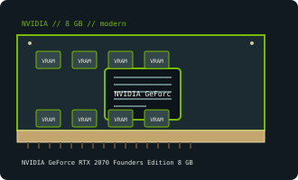

[ NVIDIA // INDIVIDUAL GPU RECORD ]
NVIDIA GeForce RTX 2070 Founders Edition 8 GB
2018; Turing TU106; 2,304 CUDA, 36 RT, 288 Tensor cores.

Recorded specifications
| Catalog identity | NVIDIA GeForce RTX 2070 Founders Edition 8 GB |
|---|---|
| Model-specific specification | 2018; Turing TU106; 2,304 CUDA, 36 RT, 288 Tensor cores; 8 GB GDDR6, 256-bit; PCIe 3.0 x16; 185 W; FE 8-pin + 6-pin. |
| Vendor-first catalog | NVIDIA vendor directory |
| Model-family index | NVIDIA vendor directory |
Compatibility and maintenance
Original RTX 2070 FE, not SUPER. FE includes VirtualLink USB-C; output and connector set differ on many partner boards. Preserve FE-matched firmware.
Sources & further reading
- TechPowerUp GeForce RTX 2070 Founders Edition specificationsModel/family technical or historical reference; confirm the exact board revision and OEM label.